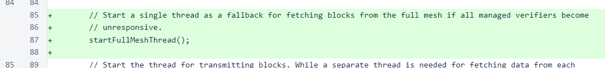
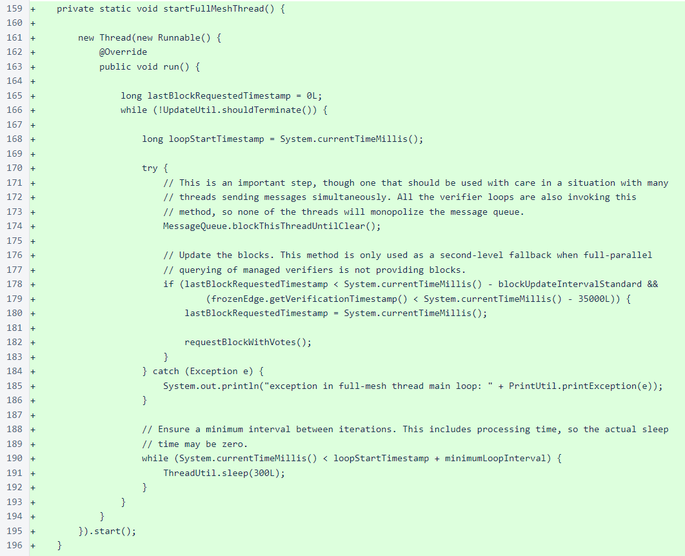
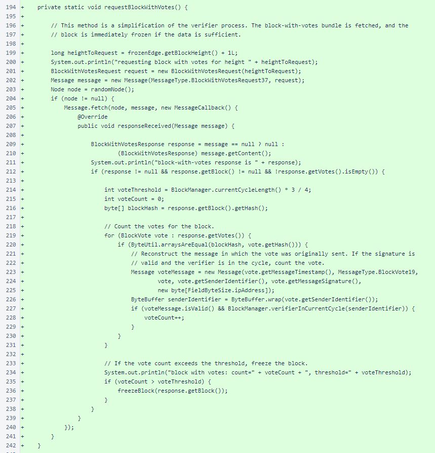
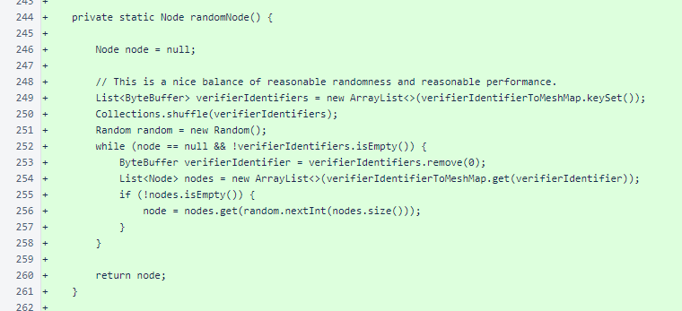
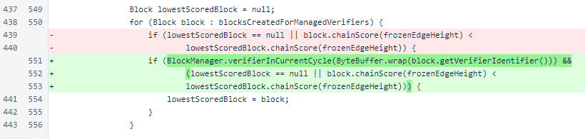

Nyzo version 519 (commit on GitHub) adds the full mesh as a fallback data source for the sentinel.
This version only affects the sentinel.
All changes in this version are in the Sentinel class. In addition to separate threads for each managed verifier, the sentinel now starts a single thread that, as a backup, can rely on the full mesh as a block source. Considerable work has been done on a unified blockchain-tracking mechanism that could be shared among the verifier, sentinel, and client, but using a unified mechanism requires some compromises. The sentinel's use of fully trusted verifiers during normal operation is efficient and stable, so it has been enhanced rather than replaced.
The full-mesh loop is simple, and it should be familiar to anyone who has reviewed the sentinel code. It is similar in structure to the loop in the managed-verifier threads. Like other sentinel loops, there is a timestamp to prevent the loop from iterating too quickly, and the loop begins by waiting for the message queue to clear. The actual block request is spaced out by at least the standard block-update interval (2 seconds), and it does not happen if the frozen edge was verified within the last 35 seconds. The block request occurs in a method called requestBlockWithVotes().
The requestBlockWithVotes() method is a simplification of the method with the same name in the Verifier class. The primary differences are use of the sentinel's combined mesh as a node source and bypassing of the BlockVoteManager class for tallying votes. Rather than wiring into the verifier's block-freezing mechanisms, this method is mostly self-contained.
The sentinel does not use NodeManager to track the state of the mesh. This prevents Message.fetchFromRandomNode() from working in the sentinel. The randomNode() method provides a random selection of a single node from a random managed verifier's list of nodes. The mesh changes slowly, so stale lists due to managed verifiers being offline are not concerning enough to warrant full-mesh querying of mesh information.
A check has also been added to exclude out-of-cycle verifiers from consideration when selecting a block for transmission. Sending a block for an out-of-cycle verifier will usually result in blacklisting of the sentinel's IP address, which would interfere with its ability to send blocks for other managed verifiers for a short time.
